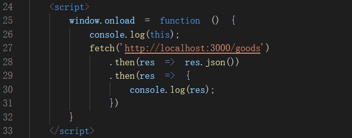

简介
fetch是w3c的一种请求标准，不是第三方库，与vue、jquery无关，且多数浏览器已内置
既可以访问远程数据，也可以访问本地数据
常用方法
Get获取数据
Delete删除数据
Post提交数据
Put更新数据
配置项
method（String）HTTP请求方法，默认为GET
body（String）HTTP请求请求参数
headers（Object）HTTP请求头，默认为0
fetch('', {
method: '',
body: '',
headers: ''
})
.then()
.then()
响应结果
text()：将返回体处理成字符串类型
json()：返回结果和JSON.parse(responseText)一样
注意：
1.返回结果，第一次拿到的不是我们想要的数据；想要获取响应数据，需在第一个then中将响应数据转为json再返回给第二个then，在第二个then中去获取最终结果

2.fetch抓取数据时不会抛出错误,即使是404或500错误；可根据响应状态判断结果
ok: true
redirected: false
status: 200
statusText: "OK"
type: "cors"
url: "http://localhost:3000/clerk/2002"
ok: false
redirected: false
status: 404
statusText: "Not Found"
type: "cors"
url: "http://localhost:3000/clerk/2002"